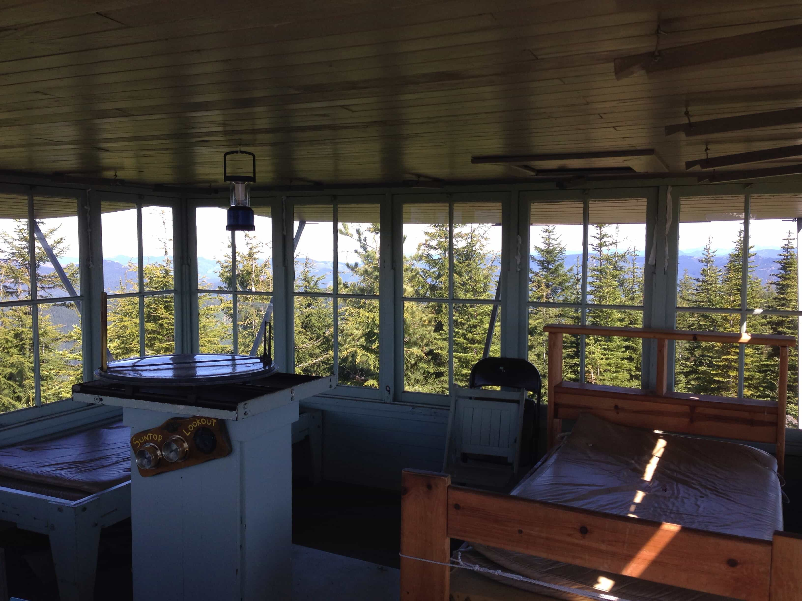
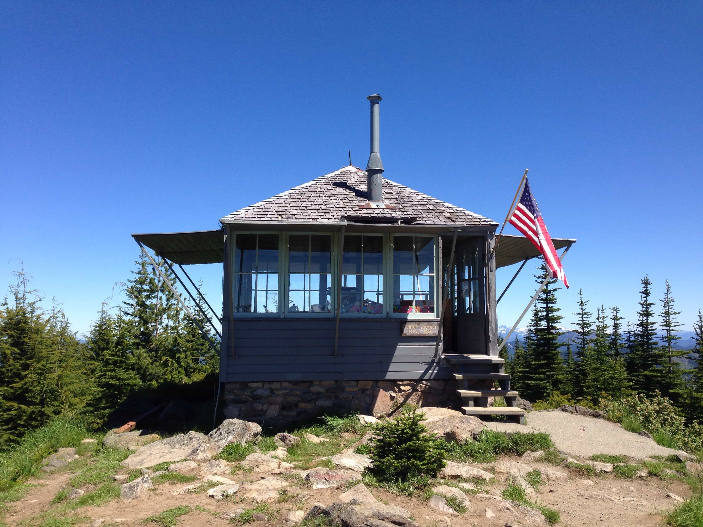

Suntop fire lookout. Entrance to SCP-3333 is located in the top right corner.

Suntop fire lookout.
Item #: SCP-3333
Object Class: Safe Keter
Special Containment Procedures: The trapdoor leading to SCP-3333 is to remain shut and locked at all times. At least one operative is to remain posted under SCP-3333 at all times to prevent entry or exit. The door to SCP-3333 is to be examined for signs of damage daily.
MTF Lambda-1 ("Maxwell's Demons") has been created and deployed to assist in the containment of SCP-3333.
Containment procedures revised 2039/04/02.
Description: SCP-3333 is a spatial anomaly located within the Suntop fire lookout, located in Mt. Baker/Snoqualmie National Forest, Washington State, United States of America.
SCP-3333 is accessible via a ladder and trapdoor on the ceiling of the Suntop lookout. Climbing the ladder leads to an identical copy of the Suntop fire lookout. This identical copy has an identical ladder and trapdoor pair, which leads to further copies of the Suntop lookout.
The topology surrounding SCP-3333 is identical to that surrounding the Suntop lookout. However, no plant, animal, or human life has been observed.
Successive SCP-3333 iterations are higher relative to the original lookout. The stairs leading up to these SCP-3333 iterations are extended by a proportional amount to allow access to the ground.
SCP-3333 was first discovered after restoration of the Suntop lookout following volcanic activity near Mount Rainier. SCP-3333's origins are not known: no members of the parks service involved in the restoration of the lookout were responsible for construction of the entrance to SCP-3333.
At the time of discovery, the trapdoor to SCP-3333 was padlocked. In order to access SCP-3333, the trapdoor was forced open. No key has been found.
Mission Parameters: Initial reconnaissance of SCP-3333.
Personnel: D-4f68a
Additional Information: D-4f68a was equipped with standard-issue audiovisual exploration recorders. The exploration was supervised by Doctor Williams and a support team located in a temporary observation outpost inside the Suntop fire lookout.
[LOG BEGINS]
Doctor Williams: Test, test. Is this thing on?
D-4f68a: Yes? Hello? [Brief pause] Doctor?
Williams: Excellent. Please proceed into SCP-3333.
There is a brief moment of audio feedback due to the proximity between Dr. Williams and D-4f68a. D-4f68a climbs up the ladder into SCP-3333.
Williams: Please report what you see.
D-4f68a: It's—well—I just came from here, but—but wait, it's empty, and how did it—
Williams: Excellent. Thank you. [Brief pause] Please stop talking.
Pause
Williams: Thank you. Please continue climbing.
D-4f68a ascends SCP-3333 for approximately an hour.
Williams: Alright, I want to test something. D-4f68a, if you don't mind, could you try opening the door and going outside?
D-4f68a: Ok, Doctor.
D-4f68a opens the door. Strong wind immediately blasts into the room, throwing D-4f68a back against the far wall and moving the furniture. D-4f68a struggles to get across the room, and eventually manages to close the door.
D-4f68a: [Out of breath] What was that?
Williams: [Coughs] It is probably best if you stay inside for now.
D-4f68a: I—I see.
D-4f68a continues to ascend SCP-3333. Wind is audible. There is no change in the interior of SCP-3333. D-4f68a continues for approximately three hours. D-4f68a takes a simple multiplication-based cognition test every ten iterations of SCP-3333. No change from baseline detected.
Several hours later, D-4f68a rests and eats some rations. During this time, analysis of video footage shows D-4f68a has climbed through 184 instances of SCP-3333.
Williams: Now seems as good a time as any. I'd like you to take that test again, D-4f68a.
D-4f68a: Alright, Doctor.
D-4f68a self-administers the cognition test. No change from baseline detected. D-4f68a has climbed through 184 iterations of SCP-3333, corresponding to approximately 673 meters of vertical gain. While some subtle elevation difference is observable, it is far less than expected.
D-4f68a: Doctor?
Williams: Yes?
D-4f68a: …what is this for?
Williams: The test? [Pause] Well, I guess it can't hurt. It's to test—it's to test how thin the air is.
D-4f68a: How?
Williams: As the air gets thinner, your—[sigh]—well, your brain slows down, basically.
D-4f68a: [Panicked] Am I going to die?
Williams: No, no. The test results are the same as they were down here. You're not going up as much as you should.
D-4f68a: Oh. Thanks, Doctor.
Williams: No problem. [Pause, cough] Please continue climbing, D-4f68a.
D-4f68a continues climbing for four more hours. The sun sets, and D-4f68a makes camp and sleeps.
The following morning, D-4f68a continues ascending SCP-3333.
D-4f68a: Doctor! Do—do you see that?
Williams: What?
D-4f68a: Over there—on that peak—are there people up there?
On a ridge southwest of SCP-3333, two small figures can be seen. They are standing motionless. These figures can only be seen from D-4f68a's perspective; they are not visible from base camp.
D-4f68a: Are there any binoculars in here? I need to see—
Williams: Give us a good look with the camera too—we need to zoom in—
D-4f68a: I found it!
D-4f68a looks through the binoculars at the figures. Base camp attempts to zoom in on the figures with D-4f68a's camera; however, the resolution is too low, and nothing can be made out.
D-4f68a: I can't see them—they're just out of focus—oh god!
The figures turn around and go behind the ridge.
D-4f68a: They saw the reflection of the binoculars.
Williams: Are you sure?
D-4f68a: They—they looked right at me. [Pause] I think one of them pointed.
Williams: I see.
D-4f68a is instructed to continue climbing SCP-3333. Deliberations are held at base camp about the figures. No consensus is reached.
D-4f68a continues climbing to the 345th iteration of SCP-3333. No other figures are spotted. D-4f68a camps until morning.
The next day, D-4f68a forgets to turn his camera and microphone on until reminded. Shortly afterwards, D-4f68a expresses feelings of anxiety and unease.
D-4f68a: You've gotta let me come down, Doc. Somethin's not right here.
Williams: Something concrete?
D-4f68a: I don't know! But—but something's not right. All this writing on the walls, and—
Williams: There is no writing on the walls.
D-4f68a: Well, I see somethin' Doc. I don't know what it says, but it's there, there for sure.
Williams: I see. You've made it this far. Please keep going.
D-4f68a continues ascending SCP-3333, occasionally requesting to be allowed to return to base. All requests are denied. Video footage is analyzed for writing or memetic agents; none are found.
On the 527th level, the topology of SCP-3333 drastically changes. Multiple copies of the Suntop fire lookout are connected to each other in a grid pattern, accessible through the lookout doorway. There is no natural light, and no sign of sky or ground. It is completely dark. No lookout has a trapdoor or ladder.
D-4f68a: This—this isn't right, Doc! You've gotta let me down! I can't see!
Williams: Calm down, please. You have an emergency head lamp and flashlight in your backpack. Please use them.
D-4f68a attempts to switch on the lights. They do not turn on. D-4f68a is instructed to check the battery compartments; they are empty. D-4f68a is instructed to use the backup batteries in the backpack. D-4f68a is unable to locate them.
D-4f68a: There's nothing in here! Nothing's right! Let me down, please!
Williams: No! Please proceed!
D-4f68a: Wait—I think—I see somethin'! I see somethin', Doc!
Williams: What? What is it?
Nothing is visible on D-4f68a's camera.
D-4f68a: I—I don't know! It's not right!
D-4f68a begins to panic.
D-4f68a: Let me come down, Doc! I've got to get out of here!
Williams: You will be summarily shot if you come back down! What is it you see?
D-4f68a's camera and microphone cut out simultaneously.
Williams: What? D-4f68a? D-4f68a! What just happened? Did he turn his recorders off? What happened?
Analysis of D-4f68a's video footage is unable to reveal cause of communication blackout. Equipment error is ruled unlikely. Due to the circumstances surrounding D-4f68a's disappearance, and the possibility of an unknown anomalous object in the upper portion of SCP-3333, another expedition is proposed and approved.
Space.
Mission Parameters: Determine the reason behind the disappearance of D-4f68a, locate any anomalous objects located by D-4f68a, and identify any anomalous entities present within SCP-3333.
Personnel: MTF Mod-0 ("Characteristic Eigenspaces")
Additional Information: All members of MTF Mod-0 were equipped with standard-issue survival gear and recording equipment. No special items were deemed necessary. All batteries and backups were triple-checked. Doctor Williams supervised from base camp.
[LOG BEGIN]
Mod-1: Mod-1, check.
Mod-2: Mod-2, check.
Mod-3: Mod-3, check.
Mod-4: Mod-4, check.
Mod-5: Mod-5, check.
Mod-1: Ok, everyone. Standard-issue tower approach. Two ahead, one in the middle, two behind. Let's go.
All team members begin to ascend SCP-3333. No figures are visible on nearby ridges. The sky is overcast, and the wind is audible. As the MTF climbs, the wind dies down, bit by bit.
After several hours of climbing, Mod-4 and Mod-2 encounter the room where D-4f68a attempted to exit SCP-3333. The furniture is still in a state of disarray, and nothing appears to have been moved.
Mod-1: Here seems as good a place as any.
The members of Mod-0 gather and attempt to mount an expedition outside of SCP-3333. Mod-2 is attached to a rope and exits SCP-3333. There is no strong wind, and Mod-2 is easily able to leave.
Mod-2: There's nothing here. Doctor?
Williams: That's strange. I suppose it died down. Keep exploring, I suppose.
Mod-1: Roger.
The members of the MTF exit SCP-3333 and begin to explore. The topology around SCP-3333 is identical to that surrounding the Suntop lookout. No plant or animal life is visible. No humanoids can be seen. The members of the MTF explore for several hours, then reconvene at SCP-3333.
Mod-3: There's nothing here.
Mod-4: No plant life, though. That's strange.
Williams: If this pattern holds across the world here, that could account for the stronger wind patterns. Not sure where the oxygen would come from, though. Anyways, keep ascending. We can sort this out later.
Mod-1: Roger.
The MTF ascends for several more hours and camps for the night. Their pace is slower than that of D-4f68a; they ascend SCP-3333 for several more days with no notable encounters. No auditory or visual hallucinations are noted. On the fourth day, they arrive at the apex of SCP-3333.
Mod-1: Flashlights out, everyone.
Members of the MTF equip their lanterns and flashlights. All are fully equipped with batteries, and backup batteries are double-checked. Apart from that made by the MTF, there is no sound and no light.
Mod-1: Alright. Two one two again. Arbitrary direction…oh, let's go that way.
Mod-1 points at a random direction, and the MTF proceeds in that direction. Reflector markers are left for navigation.
The SCP-3333 iterations are connected horizontally, through their external walkway. There is no stairway down, and the railings have been removed such that the walkways can be pressed up and joined with each other. There is no sign of seam between the walkways, and no trace of manmade workmanship.
Mod-2 pulls up a board at random from the walkway. There is nothing but blackness below. Mod-2 drops a glowstick into the hole; no bottom is visible. Mod-3 fires a signal flare into the air; no ceiling is visible. No sound or light appears.
Williams: Do you notice anything strange?
Mod-4: Such as?
Williams: Any of the hallucinations reported by D-4f68a; anything that could indicate what he was talking about near the end.
Mod-1: No. No sign of the body or equipment either. Do you want us to prioritize that?
Williams: I think it would be somewhat helpful if you could. There doesn't appear to be a pattern or purpose to these rooms, anyways.
Mod-1: Roger.
The MTF splits up and begins a radial search pattern from the origin. This continues for approximately an hour.
Mod-3: I found something!
Mod-4: What?
Mod-2: What is it?
Mod-1: Coming.
Members of the MTF gather. En route, Mod-5's flashlight cuts out.
Williams: What is it?
Mod-3: It's his backpack. Completely empty. It hasn't been torn or anything, though.
Mod-4: No sign of a struggle.
Mod-2: Was it propped up against the table when you got here?
Mod-3: Yes. I haven't touched it.
Mod-1: Good; let's not. [Pause] Where's Graham? [Pause] Graham? Everyone, check in!
Mod-2: Mod-2.
Mod-3: Mod-3.
Mod-4: Mod-4.
Mod-1: We're missing Graham. Do you have a feed on his camera, Doctor?
Williams: N-no. His flashlight's out. I can't see anything.
Mod-1: Roger. Two by two. I'll go with Horace. Radial pattern out from here.
Mod-2: Right.
Mod-3: Okay.
Mod-4: Yes.
Mod-1 and Mod-3 pair up. Mod-2 and Mod-4 pair up. They begin a radial search pattern. There is still no sound. Doctor Williams plays back Mod-5's camera footage prior to loss of communication; there is no sign of distress. The camera is transmitting, but is completely black.
Mod-2 and Mod-4 fall over. There are two loud sounds, presumably their bodies hitting the floor. A faint dripping sound can be heard. Microphones and cameras on both cut out near-simultaneously. Mod-5's camera and microphone shut off.
Williams: Hello? Hello! We've lost feed on Mod-2 and Mod-4!
There is another thud. Mod-3's microphone and camera cut out.
Williams: Hello? Mod-1?
Mod-1: What—what just happened—
Williams: I don't—where's Mod-3?
Mod-1: I turned away for a second, and now there's—he's—
Mod-1's headlamp rapidly scans the surrounding area. No sign of the rest of Mod-0 can be found.
Mod-1: [Into the darkness] Hello? [Pause] [Whispering] I—I think there's something in here—with me—
Williams: What? What is it? Do you see words?
Mod-1: No, I don't see anything—
All four cameras and microphones reactivate. This is not simultaneous; it is consistent with the equipment manually being activated.
Mod-5: Hello? Hello?
Williams: The equipment's on—what the hell happened?
Mod-3: I dunno, Doc. There was something on the ground, and I tripped, and—
Mod-1: Where are all of you? Check in!
Mod-2: Mod-3.
Mod-3: Mod-5.
Mod-4: Mod-2.
Mod-5: Mod-4.
Mod-1: Th—
Mod-1's microphone and camera suddenly cut out.
Mod-2: Mod-1? Hello?
Mod-1's camera and microphone reactivate.
Mod-1: I—I saw it too—
Mod-3: Yes—
Williams: What? Saw what?
Mod-4: I don't know—it's spectral, like floaters—
Mod-5: Something here isn't right.
Mod-2: No. We need—
Mod-4: It isn't safe here—
Williams: What are you talking about?
Nothing besides the Suntop fire lookout is visible on any camera.
Williams: Is there anything with you?
Mod-1: N-no—it's not that, Doc—
Mod-4: There! Do you see it, Doc?
Nothing is visible.
Williams: No! What is it?
Mod-3: W-we're not safe here.
Mod-2: Something's not right.
Mod-1: [Breathing rapidly] It's—it's there!
Williams: What is it?
Mod-1: It's—it looks like a—
[Pause]
Nothing is visible through any MTF feeds.
Mod-1: It's like—uh—
Mod-3: It looks like a castle—or no! A mountain!
Mod-4: A mountain! A ghostly mountain! But—but it isn't—
Mod-5: It's—a flaming mountain, conjured of smoke and air. A tower of smoke and ash—
Mod-3: I see it!
Mod-1: I see it too!
Mod-5: We need to go! Retreat, everyone!
All: Roger.
MTF Mod-0 retreats from the apex of SCP-3333, and proceeds rapidly down SCP-3333. Several days later, they arrive at base camp and are debriefed. They express confusion over the events within SCP-3333, and show a definite unwillingness to reenter. Given the circumstances, and the possibility of a memetic agent, a special counter-memetics operative is brought in for further exploration over the objections of MTF Mod-0.
Space.
Mission Parameters: Explore the apex of SCP-3333, and locate and neutralize any memetic anomalies or agents inside.
Personnel: Counter-Memetic Specialist 0 ("Nullwalker")
Additional Information: Specialist 0 is a deaf-blind-mute, and communicates solely through a modified signaling system embedded into their hand. Standard-issue rations are provided. No other equipment is necessary. Doctor Williams and MTF Mod-0 supervise the operation.
[LOG BEGIN]
0: LEAVING BASE NOW
Williams: Let us know if you need anything.
0: YES
Specialist 0 begins to ascend SCP-3333.
Mod-5: [To Williams] I don't like this—
Williams: If it was frightening enough to make your crack team turn tail and flee, it is certainly worth calling in Annette.
Mod-5 does not respond. Specialist 0 continues to ascend.
0: ROOM DIFF. MESSY. FIGHT?
Williams: No, that was us.
0: OK.
A few hours pass.
0: SOMEONE OUTSIDE. WATCHING.
Williams: They were encountered earlier. If you keep going up—
0: AM. STILL FOLLOWING. WAS WRONG. NOT WATCHING. SOMETHING ELSE.
Williams: What do you mean?
0: DON'T KNOW.
Specialist 0 continues climbing for several more hours. At this point, Specialist 0 has been climbing for over 12 hours.
Williams: Don't you need to rest?
0: SOMEONE STILL THERE. NOT SAFE. WILL USE AMPH.
Specialist 0 consumes 100 milligrams of amphetamine and continues to ascend.
0: OUTSIDE. CAN YOU SEE?
Williams: No, I can't—
There is a flicker of motion on the edge of the camera. Something looking through the windows ducks down as soon as the camera is turned in its direction. The wind is strong; there is no chance of going outside.
Williams: There's—
0: THEY KNOW.
Specialist 0 begins to rapidly climb upwards. Flickers of motion are occasionally visible outside SCP-3333. Small rustling sounds can occasionally be heard over the wind.
Mod-5: Retreat, specialist!
0: NO
Specialist 0 continues rapidly climbing. After approximately an hour, they arrive at the apex of SCP-3333.
0: BLOOD. NO LIGHT.
Specialist 0 starts walking. They do not turn their flashlight on. Nothing is visible on the camera; only Specialist 0's footsteps are audible on the microphone. A loud slam is audible in the distance.
0: HERE.
[Pause]
0: NO HAZARDS?
Specialist 0 begins walking faster, then stops suddenly. Several small rustlings can be heard; they quickly cease.
0: BODY.
There is a sound of shifting clothing as Specialist 0 bends down. The rustlings can be heard again, louder and closer.
Mod-5: Get out of there, Specialist!
Williams: Annette!
Several squishing sounds can be heard.
0: BODY. BLOOD. [Pause] INTERNAL ORGANS. MUSCLES. SMOOTH. TOO SOFT. [PAUSE] HARD. METAL.
The rustlings grow in size, getting closer and closer. They surround Specialist 0 and overlap, turning into one continuous drone.
Mod-5: Get out, Specialist! Leave it! Go!
0: METAL. WORDS.
There is a thud.
0: TTTTTTTTTTTTTTTTTTTTTTTTTTTTTTTTTTTTTTTTTTTTTTTTTTTTTTETTET ET ETTET E UNWFOA JFSLFPAFJ 13R9 AJ SLFJOWIUR;KZ
Williams: Annette? ANNETTE?
0: LIGHTS LIGHTS OUT WHERE IS LIGHT
Williams: ANNETTE!
0: THERE IS A MOUNTAIN. I NEED TO COME DOWN. WHERE IS THE LIGHT?
Williams: Annette…
Specialist 0's flashlight turns on. Specialist 0 is laying on the ground. The light illuminates a pile of muscles, organs, and bones in advanced decomposition. A metal dog tag is visible clutched in Specialist 0's hand. It reads "MTF Mod-5: Graham Purcell."
[DATA EXPUNGED]
Space.
Addendum I:
Following the events of Exploration III, the entities inside SCP-3333 (hereafter designated SCP-3333-1) killed or impersonated all members present at Temporary Observation Post 3333. No distress signal was sent, and Exploration III was not forwarded before its conclusion. SCP-3333-1 entities maintained the facade of observation and exploration of SCP-3333, and continually requested manpower and equipment for a period of over one month. The ruse was only discovered when a supply assistant managed to send an emergency message before being killed or impersonated. Recontainment teams arriving at SCP-3333 found it completely abandoned. Over 50 personnel were lost.
Given the large number of SCP-3333-1 entities assumed to have been released, including those who did not impersonate a member of the Foundation, the single-purpose task force Lambda-1 ("Maxwell's Demons") has been created for the purpose of researching, hunting, and neutralizing SCP-3333-1 instances.
Addendum II:
On 2039/04/02, a coded message was received from Doctor Williams cellular phone. It did not appear to have been sent from inside SCP-3333; however, the exact location has not been identified.
The message contained the following log of Doctor Williams, almost certainly as she was fleeing from MTF Mod-0. For completion, this message is included. Reader discretion is advised.
Doctor Aardman
The following was recorded by Doctor Williams on her cellular phone while inside SCP-3333.
[LOG BEGIN]
The footage begins, slightly after the end of Exploration III. Doctor Williams is climbing upwards through SCP-3333, camera attached to her side. She is breathing heavily, and appears to be running from something. Gunshots can be heard down below.
Doctor Williams climbs upwards for approximately ten minutes, then stops to rest. She props the camera up against a table and blocks off the lower trapdoor with a chair. She sits down.
She is covered in blood, is visibly panicked, and is carrying a handgun. She looks at the camera, begins to speak, then starts crying. She continues crying for approximately a minute, then stops.
Williams: They got us. It was wonderfully done. Just the right amount of vagueness, and who would dare argue with a seasoned MTF deciding to turn tail and run? And of course I didn't know any of them closely, so who was I to say if there was anything wrong…
There is a rattling sound. Someone is attempting to get through the trapdoor. Williams grabs the gun and points it at the door.
Voice: Doctor Williams? Doctor Williams! This is MTF Alpha-3! We received a distress call from this outpost! We were attacked by the personnel assigned here! What's going on here, Doctor? [Pounding] Let us in, Doctor!
Williams: [Panicked] St— [Coughs] Stay back! I—I'm not falling for it!
Alpha-3: Doctor Williams! Please! We will treat you as an enemy agent if you do not let us in!
Williams: [Screaming] Stay back!
Several fingers emerge through the trapdoor and begin to lift it up. Williams runs over and stamps on the fingers. There is a crunching sound, and the fingers go completely flat, still trapped in the door. There is a tearing sound as they are pulled back through the door. Williams fires two shots through the top of the door, grabs the camera, and begins climbing again.
Doctor Williams climbs for approximately a minute and a half, blocking off more trapdoors as she goes, then stops to vomit and cry for about ten minutes.
Following this, Williams continues to climb nonstop for over twelve hours before collapsing. She remains unconscious for around two hours, then wakes up screaming.
Williams: [Screaming subsides] I—am still here. [Pause] I'm thirsty. [Pause] I wish I had grabbed a kit.
It begins to rain outside SCP-3333. Williams starts laughing.
Williams props up the camera, then goes outside and attempts to drink. After a short period of time, she spits and comes back inside.
Williams: Salty.
Williams continues to climb for an hour.
There is a knock on the door of SCP-3333.
Williams immediately stops and pulls out her gun. She is breathing heavily, and her hands are shaking.
There is another knock, this time on the other side of SCP-3333.
Williams turns around. D-4f68a is standing at the door. He is extremely emaciated, and is leaning against the door. His skin is dry, cracked and ulcerated. Falling off in places, almost. He attempts to open the door. There is a simple knob lock on the door; he cannot open it.
D-4f68a: [Rasping] Let me in, Doc!
Williams: Get back!
Williams backs away from the door and points her gun at D-4f68a. He continues rattling at the door.
D-4f68a: Please Doc, let me in! There's no water out here!
Williams: It's not—you're not—he never called me Doc! Not once!
There is silence.
D-4f68a's face goes completely slack.
D-4f68a: I never really watched him. Ever since you were a child, though, I always thought you had very pretty eyes…
D-4f68a breaks one of the door's panes with his fist. There is no blood. He reaches in and turns the knob. Williams begins firing. D-4f68a opens the door and begins running at Doctor Williams. Williams fires at D-4f68a five times. One bullet hits his leg, and he collapses. He begins writhing on the ground. His skin only partially follows this motion; it is as if there is something inside of him sliding around. Williams fires five more times. One hits D-4f68a's arm. There is no blood. His arm looks flat. D-4f68a attempts to flip over and crawl away; his arms flap behind him like rubber. There is no support in his arms. Williams screams. There is a large writhing mass in the center of D-4f68a's chest. The rest of D-4f68a flaps around it, entirely useless. There is a loud flapping sound from inside D-4f68a. Williams fires four more times. Two shots hit D-4f68a in the chest. There is a tearing sound and the camera falls over. Williams fires once more, and the gun clicks empty. There is a loud, dry thud. Williams picks up the camera. She appears to be in shock. Williams sets the camera down and vomits. She picks the camera up again, then points it at the corpse of D-4f68a. There is a large black pile slumped against the broken window. Clear gelatinous blood oozes out of it. It does not move; it appears to be dead. The exact physiology of the entity is difficult to discern; it appears to have thick semitransparent wings. A pile of skin lays on the ground. It is torn apart.
Williams: It—it's— [Pause]
Doctor Williams attempts to throw up again. However, she is only able to retch for several seconds.
Williams: [Rapidly and quietly] There is a fetish among humans at the deepest level about enlightenment and height, about ignorance and depth. Here we are, on a castle in the sky, on a mountain in the air; the God Pillar, a recursive stack, and here at the top we find nothing, a dead world, an unfulfilled promise… [Pause] I just want—I want to go home…
Williams proceeds to climb for several minutes, blocking each trapdoor as she goes. She stops for a moment. She begins to laugh.
Williams: I finally did it though, Annette! I'm here…Annette…
Williams begins to cry.
Several minutes later, Williams composes herself and resumes climbing. Approximately half an hour later, she arrives at the apex of SCP-3333.
Doctor Williams turns on the flashlight. It illuminates the Suntop fire lookout; nothing else is visible. There is no sound or external light.
Williams: Hello? [Pause] [Shouting] HELLO?
A pause. Williams voice does not echo. There is no reply.
Williams: There's nothing up here. There never was. Floating words, a ghostly mountain…pah. [Pause] I had still hoped, though. I think.
Williams walks around SCP-3333's apex for a few minutes.
Williams: There's just nothing here. Nothing at all.
Doctor Williams sits down and props up the camera on a table.
Williams: I wish I could drink.
Footsteps can be heard in the distance.
Williams: [Whispered] Oh shit…
The footsteps get closer. They are uneven and rough, heavy feet slamming with each step. Occasionally they stop, and there is a wet thunk as the person hits furniture or a wall.
Williams: [Quietly] No, no…
The body of Specialist 0 stumbles into view. The flesh is unevenly stretched, lumpy and disfigured; patches have fallen off, showing nothing but the writhing body of the thing inside. The head hangs limp, and flops down onto the chest. The overall body moves jerkily, with little sense of purpose or direction. Williams retches, apparently from the smell.
Williams: [Screaming] ANNETTE!
The entity staggers into the room. Williams steps back and away, knocking over a chair. The entity swivels to look at the direction of the vibration. Something enters the head; it gains structure and form, and stands up. There are scratches around the eyes and ears. The entity attempts to vocalize; a wet gurgling sound comes out.
Williams: [Screaming] ANNETTE!
Williams begins sobbing. The entity removes structure from the head. Its internal structure completely collapses and the head falls back. Williams raises her gun and attempts to shoot the entity. The gun is empty; Williams still attempts to shoot. The gun clicks. Williams continues sobbing. The gun continues to click. Williams drops to her knees and drops the gun. The entity gets closer. It has trouble walking, has trouble moving; it staggers, lumpy and misshapen. The torso of Specialist 0 writhes; it is as if something is tangled in a sheet, trying to get out.
Williams: I'm sorry.
There is a tearing sound. The flesh of Specialist 0 rips. It is difficult for the entity inside; the skin is tough, and the interior layer of fat does not want to give way. A barbed stinger shoots out through the tear and punctures Doctor Williams' skin. Williams collapses. The stinger appears to contain a paralytic agent. Specialist 0's skin continues to rip. A large black entity climbs out, discarding the skin. It has large semi-translucent wings and a large sucker appendage on its chest. It does not have any visible eyes. Its skin is extremely thin; organs can be seen through some viscous internal fluid, but no bones. It approaches Williams, making a rustling with its wings as it moves. It reaches Williams and thrusts its appendage into the wound. There is a sucking noise and a dripping sound. Chunks of semiliquified organs and bone emerge from the back end of the entity, sucked out entirely, until there is nothing but an empty sheet of skin. The entity, still attached to the skin, contorts its body and slips into the wound. The skin jerks as the entity fits into it. The skin fills out into the form of Williams. The entity stands up. The entity turns off the camera.
[LOG END]
Space.
Cite this page as:
"SCP-3333" by Jekeled, from the SCP Wiki. Source: https://scpwiki.com/scp-3333. Licensed under CC BY-SA.
For information on how to use this component, see the License Box component. To read about licensing policy, see the Licensing Guide.
Filename: 3000.png
Author: Cyantreuse
License: CC BY-SA 3.0
Source Link: SCP Foundation Wiki
Derivative Of:
Name: A pustule.jpg
Author: Saurabh R. Patil
License: CC BY-SA 3.0
Source Link: Wikimedia Commons
{kind=link}
Name: Cutaneous findings in systemic sarcoidosis.JPEG
Author: Nowack et al.
License: CC BY-SA 2.0
Source Link: Wikimedia Commons
{kind=link}
Name: firm up bat wings
Author: Kendra Goering
License: CC BY-SA 2.0
Source Link: Flickr
Name: Necrotizing fasciitis left leg.JPEG
Author: Piotr Smuszkiewicz, Iwona Trojanowska, & Hanna Tomczak
License: CC BY-SA 2.0
Source Link: Wikimedia Commons
{kind=link}
Name: Screw Loose
Author: Steve Jurvetson
License: CC BY-SA 2.0
Source Link: Flickr
Name: wrinkled dough skin
Author: foam
License: CC BY-SA 2.0
Source Link: Flickr
Filenames: a.jpg, b.jpg
Author:Jekeled
License: CC BY-SA 3.0
Source Link: SCP Foundation Wiki